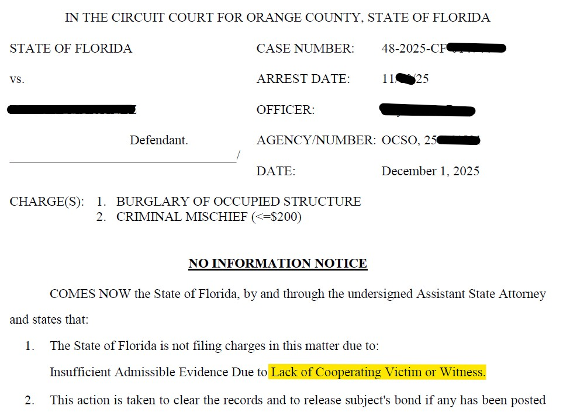

A Thanksgiving to Remember: How We Got Felony Burglary Charges Dismissed
A Co-Parenting Dispute That Became a Felony
Published on by Attorney Jeff Lotter
Most people think burglary means breaking into a stranger's home to steal. But in Florida, you can be charged with felony burglary during a co-parenting argument—even when you were let in through the front door.
2 Felony Charges. 1 Night in Jail.
Full custody stripped. No contact with her child's father. Holidays approaching.
Result: ALL CHARGES DISMISSED
What Happened
In the weeks leading up to Thanksgiving, our client went to her co-parent's apartment. They share a child together. What started as a conversation escalated into an argument.
The victim opened the door and let her in. During the argument, some glasses were broken and property was disturbed. She was asked to leave multiple times but the situation continued to escalate.
Deputies responded. Based on the victim's statement and observations at the scene, our client was arrested and transported to the Orange County Jail, where she spent the night.
The Charges Filed
- Burglary of a Dwelling — Second Degree Felony (F.S. 810.02) — Up to 15 years in prison
- Criminal Mischief — Property damage charge (F.S. 806.13)
How Does a Domestic Argument Become Felony Burglary?
Florida's burglary statute is broader than most people realize. Under Florida Statute 810.02, the State can charge burglary if a person:
Florida Burglary Elements (F.S. 810.02)
- Enters a dwelling, structure, or conveyance with the intent to commit an offense therein, OR
- Remains in a dwelling, structure, or conveyance after permission to remain has been withdrawn, with the intent to commit an offense therein
That second theory—"remaining after permission withdrawn"—is how domestic disputes get charged as burglaries. Once the victim told our client to leave and she didn't immediately exit, the State argued she was "remaining" with intent to commit an offense (the property damage).
Why This Matters
Burglary of an occupied dwelling is a second-degree felony punishable by up to 15 years in Florida State Prison. What many people would consider a heated argument between co-parents can be charged the same as breaking into a stranger's home.
The Immediate Consequences
When our client bonded out the next morning, she wasn't just facing criminal charges. The standard conditions of her bond included:
Night in Orange County Jail
Arrested and transported to the Orange County Jail. Spent the night in custody before bonding out.
No-Contact Order
Standard bond condition: no contact with the victim. But the victim is her child's father—the person she needs to coordinate custody with.
Cannot Return to the Residence
Prohibited from returning to the apartment where the incident occurred.
Full Custody to the Victim
With a no-contact order in place and felony charges pending, the victim had full custody of their child.
Thanksgiving was weeks away. Our client was facing the possibility of spending the holidays without her child, with a felony hanging over her head.
The Defense Strategy
Many defense attorneys take a passive approach—wait for discovery, wait for the State to make an offer, wait for a trial date. We don't wait.
We conducted our own investigation. We re-interviewed the victim. After speaking with us, he provided a written statement indicating he did not wish to proceed with the prosecution.
Why Victim Cooperation Matters
In cases like this—domestic situations with no serious injuries and relatively minor property damage—the State relies heavily on victim cooperation to proceed. Without a cooperative victim willing to testify, the State's case becomes significantly weaker. The prosecutor must weigh whether to force an unwilling victim to testify or to dismiss the case.
With the victim declining to proceed, the State's case collapsed.
The Resolution: A Thanksgiving to Remember
Thanksgiving Day
With the no-contact order still in place, our client spent Thanksgiving with her family—but not her child. The case wasn't over yet.
Monday After Thanksgiving
First day back to work after the holiday: BOTH CHARGES DISMISSED.
Case Result
Burglary of a Dwelling — DISMISSED
Criminal Mischief — DISMISSED

Official Nolle Prosequi filed by the State Attorney's Office — Both charges dismissed.
What This Case Teaches Us
1. Burglary Charges Can Arise from Unexpected Situations
You don't have to break into a stranger's home to be charged with burglary. Domestic disputes, co-parenting conflicts, and arguments with family members can result in felony burglary charges under Florida's "remaining in" theory.
2. Don't Assume the State's Case Is Solid
An arrest doesn't mean a conviction. The State must prove every element beyond a reasonable doubt. Many cases have weaknesses that aren't apparent until a defense attorney investigates.
3. Proactive Defense Investigation Matters
Waiting passively for the State to act can mean months or years with charges hanging over your head. Our investigation identified the path to dismissal and pursued it aggressively.
4. Timing Matters
Criminal charges don't pause for holidays. But neither does effective defense work. We resolved this case before the holiday season ended, allowing our client to move forward with her life.
Frequently Asked Questions
Can I be charged with burglary if I was invited in?
Yes. Under Florida law, burglary can be charged if you "remain in" a dwelling after permission is withdrawn, with intent to commit an offense. Even if you were initially invited, refusing to leave when asked can form the basis of a burglary charge.
What's the difference between burglary and trespassing?
Trespassing is entering or remaining on property without permission. Burglary requires an additional element: intent to commit an offense inside. This intent element elevates a misdemeanor trespass to a felony burglary.
What happens if the victim doesn't want to press charges?
Technically, the State—not the victim—decides whether to prosecute. However, in many domestic-related cases, prosecutors are reluctant to proceed without victim cooperation, especially when there are no serious injuries. A victim's written statement declining to participate can significantly impact the State's decision.
How long does it take to get charges dismissed?
Every case is different. Some dismissals happen within weeks; others take months or longer. The key factors include the strength of the evidence, the availability of witnesses, and how aggressively the defense pursues resolution. In this case, our proactive investigation led to dismissal within weeks.
Learn More: For a comprehensive overview of theft and burglary defense strategies in Florida, see our Complete Guide to Theft Defense.
Related Articles
Facing Burglary or Criminal Mischief Charges?
Don't assume the worst. An arrest is not a conviction. We investigate every case and fight for the best possible outcome—whether that's dismissal, reduction, or acquittal.
Available 24/7 • Felony Defense • Theft & Burglary • Domestic-Related Charges
Law Office of Jeff Lotter PLLC
Serving Orlando, Orange County, and Central Florida